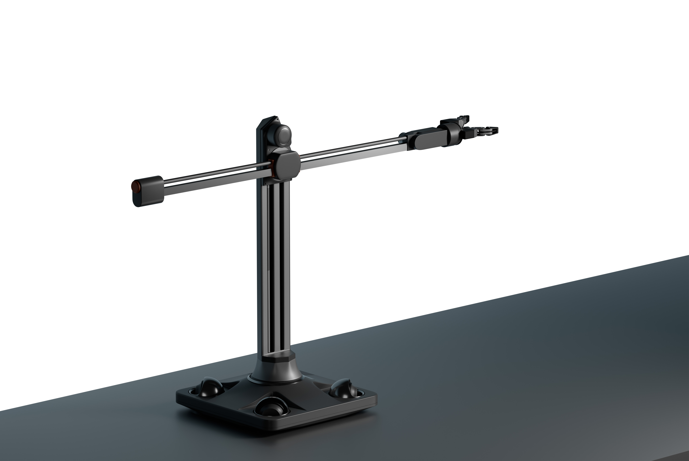

中共党员 | 学生会主席
校级优秀学术干部
ANQI WANG | 设计 · 实践
浙江工业大学 · 工业设计硕士 (2024-2027)
福建理工大学 · 建筑学本科 (2019-2024)
独立完成刚、柔结构设计与制作、结构的测试与优化。聚焦场景完成控制代码开发与测试。
工作内容包括前期相关病患及病理的调研，对现有康复手段及竞品调研，综合完成需求分析、产品的功能、创新点定义。提出采用“镜像疗法”+肌肉电刺激的综合康复手段。学习现有面部康复设备并完成外观结构优化。
循环建筑理念下的景观建筑设计与建造。落地于福建省宁德市南岩村。项目以循环建筑规划及设计指南为设计指导,从施工、落地、废弃等阶段的设计皆满足循环建筑设计要求。
循环建筑论文一篇